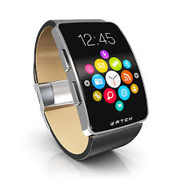
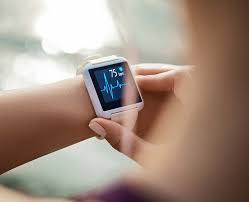

Smartwatches are the future of health checks. They can monitor your heart rate, track your steps, and even detect falls. Here are some of the best smartwatches on the market:

Smartwatches have become increasingly popular in recent years. According to a report by Counterpoint Research, the global smartwatch market grew by 20% in the first quarter of 2021. Apple remains the market leader, with a 33.5% share of the market, followed by Samsung and Garmin. The report also found that the average selling price of smartwatches has increased by 6% year-on-year, indicating that consumers are willing to pay more for premium features.
Smartwatches offer a range of health benefits, including the ability to monitor your heart rate, track your sleep patterns, and even detect falls. They can also help you stay active by tracking your steps and reminding you to move throughout the day. Some smartwatches also offer advanced health features, such as ECG monitoring and blood oxygen saturation tracking.
According to a report by Straits Research, the global smartwatch market is expected to grow at a CAGR of 12.5% from 2021 to 2028. The report attributes this growth to increasing consumer awareness of health and fitness, as well as advancements in wearable technology. The report also highlights the growing popularity of smartwatches among younger consumers, who are increasingly turning to smartwatches to track their health and fitness goals.
See table below showing market trend for three consecutive years.| Year | Market Growth (%) |
|---|---|
| 2021 | 20% |
| 2022 | 25% |
| 2023 | 30% |
Smartwatches are the future of health checks, offering a range of features to help you stay healthy and active. With the global smartwatch market continuing to grow, it's clear that consumers are increasingly turning to smartwatches to monitor their health and fitness. Whether you're looking to track your steps, monitor your heart rate, or simply stay active, there's a smartwatch out there for you.

Counterpoint Research. (2021).